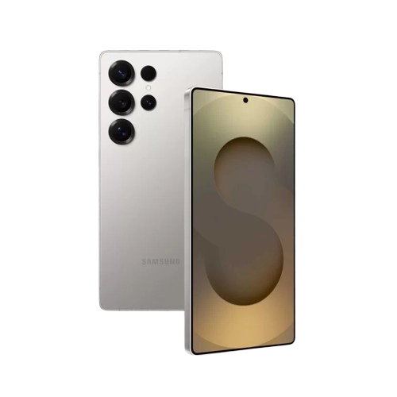

📸
✍️
🧠
🖥️
🚀


- 6.8"
- Dynamic AMOLED 2X
- 3088 x 1440
- 120Hz LTPO
- Snapdragon 8 Gen 4
- 12GB
- 256GB/512GB/1TB
- Android 15
- 200MP f/1.7
- 12MP f/2.2
- 50MP f/2.4
- 12MP f/2.2
- 5500mAh
- 45W Wired
- 15W Wireless
- 4.5W
3,100
9,800
13h
99
| Snapdragon 8 Gen 4 | Snapdragon 8 Gen 3 | Snapdragon 8 Gen 2 | |
| 6.8" | 6.8" | 6.8" | |
| 5500mAh | 5000mAh | 5000mAh | |
| 200MP | 200MP | 200MP |